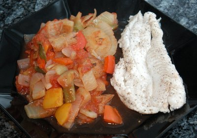

| Zutaten für 4 Personen: | |
| 1 kg | Schellfisch |
| 1 | Zitrone (Saft) |
| 3 | Fenchelknollen |
| 3 | kleine Zwiebeln |
| 3 | Paprikaschoten |
| 1/2 Dose | Tomaten geschält |
| 1 TL | Basilikum |
| 1 TL | Thymian |
| 1 EL | Öl |
| 1,25 dl | Weisswein |
Ofen auf 180°C vorheizen.
Den gesäuberten Fisch mit Zitronensaft beträufeln, in eine feuerfeste Pfanne legen, würzen mit Salz und Pfeffer. Mit Weisswein begiessen.
Zugedeckt im vorgeheizten Ofen ca. 30 Minuten garen lassen (eventuell auch weniger lang bei weniger Fisch).
In der Zwischenzeit Fenchelscheiben mit gewürfelten Zwiebeln, Paprika, mit 1 Tasse Wasser ca. 35 Minuten lang dünsten.
Danach Tomaten, Kräuter, Salz, Pfeffer beifügen und einkochen. Das Gemüse separat anrichten und mit dem Fisch sofort servieren.
Herbert Eigenmann, Code: FFF
Am 14.10.2007 probiert. Gelang ganz gut. Die 30 Minuten waren etwas lange für meinen Dorsch; er war sehr trocken. Die Zitronensauce schmeckte sehr gut. Dem Gemüse kann man auch etwas Chili beigeben.
@LINKBACK_TAG@ @WAKELOCK@